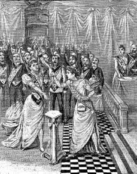

8 Nisan
Yüzbaşı Simonini, bu gece, tedirgin notunuzu okuduktan sonra, sizi örnek almaya karar vererek yazmaya koyuldum; her ne kadar göbeğimi süzmediysem de, neredeyse kendiliğinden gelişen bir halle, işleyen elim aracılığıyla bedenim ruhumun unuttuğu her şeyi hatırlamaya koyuldu. Sizin o Doktor Froïde pek de aptal sayılmazmış.
Boullan... Paris'in dışındaki bir kilisenin önünde onunla gezinişimiz gözümün önünde. Yoksa Sèvres'de miydik? Bana şöyle dediğini anımsıyorum: "Efendimize karşı işlenen günahları arındırmak aynı zamanda bunları yüklenmek anlamına geliyor. Günah işlemek, mistik bir yüktür ve iblisin insanlardan beklediği haksızlık yükünü mümkün olduğunca yoğun bir biçimde yok etmek, en güçsüz kardeşlerimizin sırtından bu ağırlığı alabilmek, bizi esir eden şer güçlerden şeytanı söküp atabilmek için buna mecburuz. Almanya'da henüz icat edilmiş papier tue-mouches denen kâğıdı gördünüz mü? Bunu pastacılar kullanıyor; melas denen şuruba batırdıkları bir şeridi vitrindeki pastaların üzerine asıyorlar. Sinekler melasa yöneliyorlar, yapışkan şerit tarafından yakalanıyorlar ve kımıldayamadan ölüyorlar ya da üzeri sinek dolu şerit kanala atılınca boğuluyorlar. İşte ruhu onarmayı üzerine alan mümin bu sinek kâğıdı gibi olmalıdır: Her türlü ahlaksızlığı üzerine çekmek ve sonra bunun arındırıcı potası olmak durumundadır."
Bir kilisede, sunak masasının önünde görüyorum şimdi onu: Günah işlemiş sofu bir kadını "arındırmak" üzeredir; kadının içine şeytan girmiştir, iğrenç küfürler savurarak yerde kıvranırken bir yandan da iblis adlarını sıralamaktadır: Abigor, Abraksas, Adramelek, Haborim, Melkom, Stolas, Zaebos...
Boullan'ın üzerinde mor bir ayin giysisi, onun üzerinde de kırmızı önlüğü var; kadının üzerine eğiliyor ve şeytan çıkarma formülüne benzeyen sözleri (doğru duyduysam) tersine söylüyor: "Crux sacra non sit mihi lux, sed draco sit mihi dux, veni Satana, veni!" Sonra pişmanlık içindeki kurbanın ağzına üç kez tükürüyor, giysisini kaldırıyor, bir ayin kupasına işiyor ve bunu ona ikram ediyor. Şimdi elleriyle bir vazonun içinden dışkı olduğu belli olan bir madde çıkartıyor, içine şeytan kaçmış kadının göğsünü açıyor ve memelerine sürüyor.
Kadın yerde biraz daha kıvranıyor, inliyor, hızla soluyor, derken bunlar yavaşlıyor ve sonunda neredeyse hipnotik bir uykuya dalıyor.
Boullan papaz odasına geçiyor, ellerini şöyle bir yıkıyor. Sonra benimle avluya çıkıyor, ağır bir görevin altından kalkmış bir kişi gibi nefes alıyor. "Consummatum est" diyor.
Adının gizli kalmasını isteyen ve dini bir ayin düzenlemek için kutsal mayasız ekmeğe ihtiyacı olan biri tarafından gönderildiğimi söylediğimi anımsıyorum.
Boullan kıkırdamıştı: "Kara ayin mi? İyi ama ayini düzenleyen bir rahipse mayasız ekmeği kutsayacak olan da odur zaten; kilise onu papazlıktan çıkarmış olsa da kutsaması geçerli sayılacaktır."
Düzeltmiştim: "Söz konusu kişinin bir rahibe kara ayin yaptıracağını sanmıyorum. Bildiğiniz gibi bazı localarda bir yemini geçerli kılmak için kutsanmış ekmeğe hançer saplıyorlar."

"Bildiğiniz gibi bazı localarda bir yemini geçerli kılmak için kutsanmış ekmeğe hançer saplıyorlar."
"Anladım. Maubert yakınlarında küçük bir eskici dükkânı işleten bir adamın kutsal ekmek ticaretiyle de uğraştığını duymuştum. Şansınızı onunla deneyin derim."
Biz ikimiz o vesileyle mi tanışmıştık?